| Year |
All cases
|
During the season
|
|||||||
|---|---|---|---|---|---|---|---|---|---|
| Athlete | Issues | Illness | Acute injury | Overuse injury | Issues | Illness | Acute injury | Overuse injury | |
| 2020 | 163 | 255 | 40 | 117 | 100 | 183 | 37 | 92 | 54 |
| 2021 | 107 | 259 | 49 | 108 | 104 | 122 | 37 | 47 | 38 |
| 2023 | 140 | 328 | 72 | 140 | 118 | 259 | 68 | 112 | 81 |
| 2024 | 85 | 157 | 32 | 71 | 56 | 129 | 29 | 61 | 39 |
Analysis of injury and physical fitness using factor analysis
Data and Results (injury and physical performance test)
Summary of injury data
| Year |
Distinct
|
Average of weekly
|
||
|---|---|---|---|---|
| Athlete | Timeloss | Match hr | Training hr | |
| 2020 | 163 | 113.50 | 89.41 | 690.56 |
| 2021 | 107 | 56.61 | 47.12 | 390.07 |
| 2023 | 140 | 64.12 | 60.84 | 760.43 |
| 2024 | 85 | 23.53 | 21.97 | 367.13 |
| Year: 2020 | Missing | Mean ± SD | Median (IQR) |
|---|---|---|---|
| age | 0/163 | 21.92 ± 3.97 | 21.40 (4.95) |
| leg_length_malleolus | 163/163 (100.00%) | — | — |
| height_cm | 41/163 (25.15%) | 169.08 ± 5.84 | 169.00 (8.00) |
| weight_fp | 49/163 (30.06%) | 63.72 ± 6.43 | 64.00 (7.75) |
| sprint_10m | 163/163 (100.00%) | — | — |
| sprint_20m | 63/163 (38.65%) | 3.12 ± 0.11 | 3.10 (0.15) |
| sprint_30m | 63/163 (38.65%) | 4.44 ± 0.16 | 4.41 (0.21) |
| sprint_40m | 63/163 (38.65%) | 5.74 ± 0.22 | 5.71 (0.31) |
| agility_left | 69/163 (42.33%) | 10.24 ± 0.29 | 10.17 (0.42) |
| agility_right | 66/163 (40.49%) | 10.18 ± 0.31 | 10.16 (0.44) |
| cmj_total | 35/163 (21.47%) | 33.38 ± 4.52 | 33.00 (5.50) |
| cmj_left | 163/163 (100.00%) | — | — |
| cmj_right | 163/163 (100.00%) | — | — |
| ankle_jump_left | 47/163 (28.83%) | 1.17 ± 0.16 | 1.16 (0.22) |
| ankle_jump_right | 47/163 (28.83%) | 1.19 ± 0.15 | 1.18 (0.18) |
| side_jump_left | 137/163 (84.05%) | 72.31 ± 5.92 | 73.50 (4.00) |
| side_jump_right | 137/163 (84.05%) | 73.35 ± 4.38 | 73.50 (7.00) |
| max_power_left | 34/163 (20.86%) | 556.19 ± 75.53 | 552.00 (98.00) |
| max_power_right | 34/163 (20.86%) | 550.11 ± 77.65 | 541.00 (101.00) |
| max_force_left | 36/163 (22.09%) | 1,064.36 ± 157.58 | 1,033.00 (212.50) |
| max_force_right | 36/163 (22.09%) | 1,068.44 ± 162.99 | 1,050.00 (215.00) |
| hamstring_left | 36/163 (22.09%) | 335.18 ± 48.26 | 336.00 (56.50) |
| hamstring_right | 36/163 (22.09%) | 348.99 ± 46.96 | 350.00 (59.50) |
| extra_weight | 163/163 (100.00%) | — | — |
| hip_squeeze_0_left | 34/163 (20.86%) | 157.98 ± 24.96 | 155.00 (30.00) |
| hip_squeeze_0_right | 34/163 (20.86%) | 161.57 ± 23.91 | 159.00 (30.00) |
| hip_pull_0_left | 34/163 (20.86%) | 146.49 ± 20.31 | 146.00 (28.00) |
| hip_pull_0_right | 34/163 (20.86%) | 153.52 ± 23.37 | 151.00 (33.00) |
| Year: 2021 | Missing | Mean ± SD | Median (IQR) |
|---|---|---|---|
| age | 0/107 | 21.88 ± 3.84 | 20.89 (5.07) |
| leg_length_malleolus | 0/107 | 0.88 ± 0.04 | 0.89 (0.05) |
| height_cm | 18/107 (16.82%) | 170.11 ± 5.62 | 170.00 (7.00) |
| weight_fp | 0/107 | 65.77 ± 6.36 | 65.80 (8.74) |
| sprint_10m | 107/107 (100.00%) | — | — |
| sprint_20m | 34/107 (31.78%) | 3.16 ± 0.13 | 3.15 (0.20) |
| sprint_30m | 35/107 (32.71%) | 4.47 ± 0.17 | 4.48 (0.25) |
| sprint_40m | 35/107 (32.71%) | 5.79 ± 0.26 | 5.80 (0.28) |
| agility_left | 41/107 (38.32%) | 10.18 ± 0.31 | 10.16 (0.41) |
| agility_right | 39/107 (36.45%) | 10.17 ± 0.28 | 10.14 (0.39) |
| cmj_total | 9/107 (8.41%) | 33.47 ± 4.84 | 33.40 (6.08) |
| cmj_left | 107/107 (100.00%) | — | — |
| cmj_right | 107/107 (100.00%) | — | — |
| ankle_jump_left | 19/107 (17.76%) | 1.19 ± 0.16 | 1.18 (0.18) |
| ankle_jump_right | 19/107 (17.76%) | 1.22 ± 0.15 | 1.20 (0.22) |
| side_jump_left | 97/107 (90.65%) | 63.70 ± 5.25 | 65.00 (8.00) |
| side_jump_right | 97/107 (90.65%) | 66.30 ± 4.22 | 66.50 (5.50) |
| max_power_left | 3/107 (2.80%) | 543.14 ± 88.22 | 536.50 (123.50) |
| max_power_right | 3/107 (2.80%) | 539.42 ± 92.30 | 527.00 (111.50) |
| max_force_left | 3/107 (2.80%) | 998.02 ± 145.63 | 978.50 (231.36) |
| max_force_right | 3/107 (2.80%) | 1,003.78 ± 150.18 | 979.50 (223.50) |
| hamstring_left | 9/107 (8.41%) | 325.54 ± 45.38 | 324.00 (53.00) |
| hamstring_right | 9/107 (8.41%) | 337.87 ± 50.48 | 340.00 (61.75) |
| extra_weight | 107/107 (100.00%) | — | — |
| hip_squeeze_0_left | 3/107 (2.80%) | 158.29 ± 26.48 | 156.00 (31.50) |
| hip_squeeze_0_right | 3/107 (2.80%) | 163.87 ± 25.27 | 161.00 (30.50) |
| hip_pull_0_left | 3/107 (2.80%) | 153.83 ± 23.44 | 150.50 (33.00) |
| hip_pull_0_right | 3/107 (2.80%) | 160.51 ± 24.16 | 158.50 (30.25) |
| Year: 2023 | Missing | Mean ± SD | Median (IQR) |
|---|---|---|---|
| age | 0/140 | 22.54 ± 3.73 | 22.54 (4.96) |
| leg_length_malleolus | 6/140 (4.29%) | 0.90 ± 0.04 | 0.90 (0.06) |
| height_cm | 127/140 (90.71%) | 170.54 ± 6.80 | 173.00 (10.00) |
| weight_fp | 11/140 (7.86%) | 65.90 ± 7.58 | 65.40 (9.60) |
| sprint_10m | 61/140 (43.57%) | 1.71 ± 0.08 | 1.71 (0.09) |
| sprint_20m | 61/140 (43.57%) | 3.15 ± 0.13 | 3.14 (0.18) |
| sprint_30m | 61/140 (43.57%) | 4.45 ± 0.18 | 4.41 (0.25) |
| sprint_40m | 62/140 (44.29%) | 5.75 ± 0.24 | 5.69 (0.33) |
| agility_left | 75/140 (53.57%) | 9.92 ± 0.33 | 9.89 (0.31) |
| agility_right | 78/140 (55.71%) | 10.04 ± 0.33 | 10.00 (0.33) |
| cmj_total | 36/140 (25.71%) | 32.13 ± 4.42 | 31.95 (5.67) |
| cmj_left | 39/140 (27.86%) | 22.12 ± 3.65 | 22.60 (4.60) |
| cmj_right | 42/140 (30.00%) | 22.30 ± 4.33 | 22.00 (5.15) |
| ankle_jump_left | 49/140 (35.00%) | 1.49 ± 0.19 | 1.50 (0.25) |
| ankle_jump_right | 53/140 (37.86%) | 1.48 ± 0.22 | 1.46 (0.32) |
| side_jump_left | 137/140 (97.86%) | 63.67 ± 4.16 | 65.00 (4.00) |
| side_jump_right | 137/140 (97.86%) | 62.67 ± 6.66 | 61.00 (6.50) |
| max_power_left | 34/140 (24.29%) | 558.24 ± 87.97 | 554.50 (113.50) |
| max_power_right | 34/140 (24.29%) | 560.13 ± 89.98 | 558.00 (122.00) |
| max_force_left | 34/140 (24.29%) | 1,042.75 ± 147.13 | 1,056.50 (200.25) |
| max_force_right | 34/140 (24.29%) | 1,053.39 ± 146.17 | 1,062.00 (196.25) |
| hamstring_left | 23/140 (16.43%) | 327.24 ± 47.27 | 323.00 (57.00) |
| hamstring_right | 23/140 (16.43%) | 337.46 ± 51.21 | 341.00 (72.00) |
| extra_weight | 140/140 (100.00%) | — | — |
| hip_squeeze_0_left | 11/140 (7.86%) | 169.98 ± 29.45 | 169.00 (37.00) |
| hip_squeeze_0_right | 11/140 (7.86%) | 171.60 ± 29.48 | 169.00 (37.00) |
| hip_pull_0_left | 11/140 (7.86%) | 151.74 ± 23.61 | 150.00 (31.00) |
| hip_pull_0_right | 11/140 (7.86%) | 152.99 ± 22.73 | 151.00 (28.00) |
| Year: 2024 | Missing | Mean ± SD | Median (IQR) |
|---|---|---|---|
| age | 0/85 | 22.56 ± 4.10 | 21.73 (5.83) |
| leg_length_malleolus | 5/85 (5.88%) | 0.90 ± 0.04 | 0.90 (0.06) |
| height_cm | 69/85 (81.18%) | 169.62 ± 5.56 | 168.50 (8.00) |
| weight_fp | 2/85 (2.35%) | 65.68 ± 5.75 | 65.20 (6.90) |
| sprint_10m | 24/85 (28.24%) | 1.78 ± 0.07 | 1.78 (0.11) |
| sprint_20m | 24/85 (28.24%) | 3.17 ± 0.12 | 3.16 (0.17) |
| sprint_30m | 24/85 (28.24%) | 4.47 ± 0.17 | 4.47 (0.25) |
| sprint_40m | 24/85 (28.24%) | 5.78 ± 0.23 | 5.74 (0.31) |
| agility_left | 39/85 (45.88%) | 9.95 ± 0.29 | 9.89 (0.34) |
| agility_right | 41/85 (48.24%) | 10.00 ± 0.32 | 9.96 (0.46) |
| cmj_total | 7/85 (8.24%) | 31.07 ± 3.61 | 30.20 (4.88) |
| cmj_left | 10/85 (11.76%) | 21.77 ± 3.88 | 21.60 (4.95) |
| cmj_right | 9/85 (10.59%) | 21.60 ± 3.81 | 21.50 (5.93) |
| ankle_jump_left | 16/85 (18.82%) | 1.49 ± 0.16 | 1.49 (0.23) |
| ankle_jump_right | 16/85 (18.82%) | 1.48 ± 0.18 | 1.47 (0.25) |
| side_jump_left | 85/85 (100.00%) | — | — |
| side_jump_right | 85/85 (100.00%) | — | — |
| max_power_left | 1/85 (1.18%) | 545.62 ± 75.88 | 548.00 (91.00) |
| max_power_right | 1/85 (1.18%) | 543.51 ± 77.01 | 545.00 (100.25) |
| max_force_left | 1/85 (1.18%) | 1,010.24 ± 137.65 | 1,016.50 (171.50) |
| max_force_right | 1/85 (1.18%) | 1,011.39 ± 133.25 | 1,027.00 (163.00) |
| hamstring_left | 11/85 (12.94%) | 316.57 ± 41.68 | 310.00 (53.00) |
| hamstring_right | 11/85 (12.94%) | 335.80 ± 48.48 | 345.00 (62.50) |
| extra_weight | 85/85 (100.00%) | — | — |
| hip_squeeze_0_left | 1/85 (1.18%) | 173.11 ± 32.04 | 170.50 (30.00) |
| hip_squeeze_0_right | 1/85 (1.18%) | 177.37 ± 32.77 | 173.50 (38.00) |
| hip_pull_0_left | 1/85 (1.18%) | 157.44 ± 27.98 | 157.50 (27.25) |
| hip_pull_0_right | 1/85 (1.18%) | 160.30 ± 28.32 | 160.00 (29.25) |
Missing test data and multiple imputation
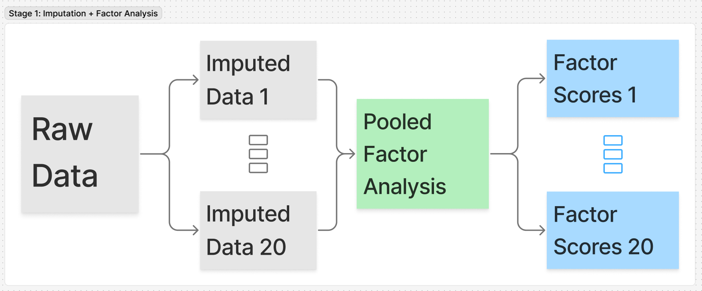
- Multiple imputation gives multiple version (in our case, I have used 20) of complete dataset imputed based on other variables which are not missing.
- Only physical performance test (PPT) variables with no more than 60% missing were used in each years were used for the analysis (the variables in red of above table were not used)
- Only using the selected PPT variables, a pooled factor analysis was performed and scores were calculated for each athlete in all 20 imputed datasets.
- The scores were used as continuous measure of underlying factor (for example physical performance) and were also categorized into 3 equal parts (using quantiles) and labelled as high, medium, low.
Factor Analysis
What factor analysis does?
Factor Analysis:
- is a method used to group related physical tests into a smaller number of meaningful factors
- identifies underlying abilities (e.g. speed, strength, hip function) that explain why some tests are correlated
- helps summarize complex test batteries into clear, interpretable scores
Why factor analysis fits this study
- Many of the physical tests measure overlapping aspects of performance
- Treating each test variables separately would repeat the same information and over‑emphasize sprint measures
- Here, factor analysis:
- Reduces repetition of similar tests
- Identifies distinct physical capacities
- Estimate scores that better reflect true performance in identified factor domain
One vs multiple factors in factor analysis
One-factor model
- Factor analysis can be used to identify one or more underlying factors from test data
- These factors are identified by using the shared information across all tests
- If the data reflect one true underlying ability:
- A 1‑factor model may be sufficient
- This single factor will typically show strong correlations with most test variables
- Example: a general overall physical performance score
- If the data reflect more than one underlying ability:
- A 1‑factor model may not capture all available information
- Important differences between types of performance may be lost
Multiple factor model
- Using more than one factor allows the data to:
- Separate different physical performance domains
- Represent abilities that are related but not identical
- Example:
- One factor may reflect being good in speed and jumping tasks
- Another factor may reflect being good in force and power tasks
- An athlete may perform well in one domain but not the other which leads to different types of injury risk
- In this case:
- Multiple‑factor models provide a more detailed meaningful description of performance
- The factors identified may differ from the single factor obtained from a 1‑factor model
Factor analysis with 1-3 factors model
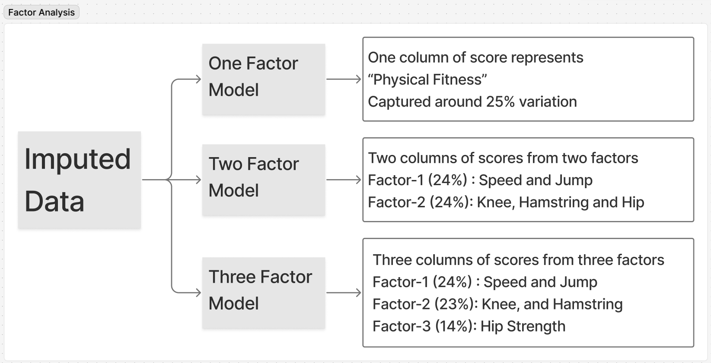
Factor and Factor Loadings
Loading are weights that indicate how much each test variable contributes to the factor. - A test variable with a high loading on a factor is strongly associated with that factor and contributes more to the factor score. - A test variable with a low loading on a factor is weakly associated with that factor and contributes less to the factor score. - The factor score for each athlete is calculated by multiplying their test variable values by the corresponding factor loadings and summing these products across all test variables.
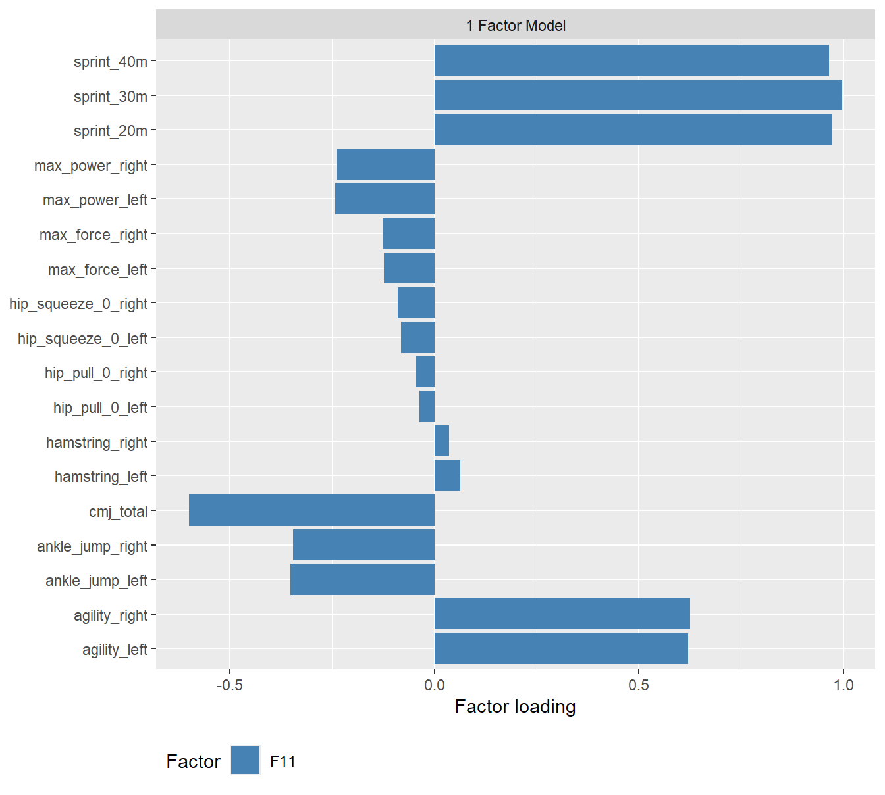
In the 1-factor model, all test variables have moderate to high loadings on the single factor, indicating that they all contribute to a this one factor (lets call it general physical performance factor). Although all variables have some contribution to the factor, sprint and jump related variables have the highest loadings, suggesting that the factor is most strongly associated with sprinting and jumping performance.
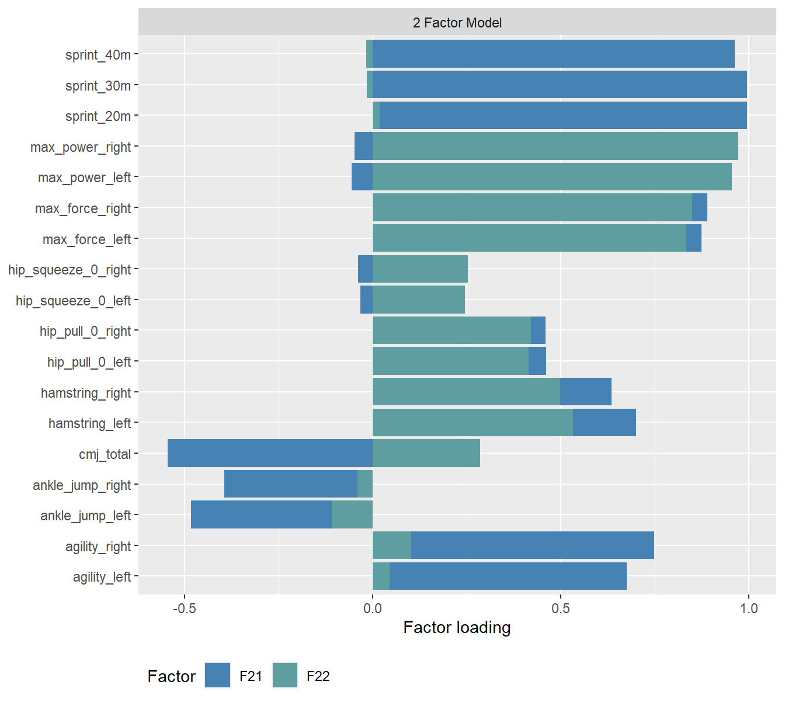
In the 2-factor model, the first factor has high loadings on sprint and jump related variables, while the second factor has high loadings on force and power related variables. This suggests that the first factor may represent a speed and power domain of physical performance, while the second factor may represent a strength and force domain.
When using 2-factor model and using scores from second factor, we can identify athletes who are good in force and power related tasks but not in sprint and jump related tasks which may be missed if we use scores from 1-factor model.
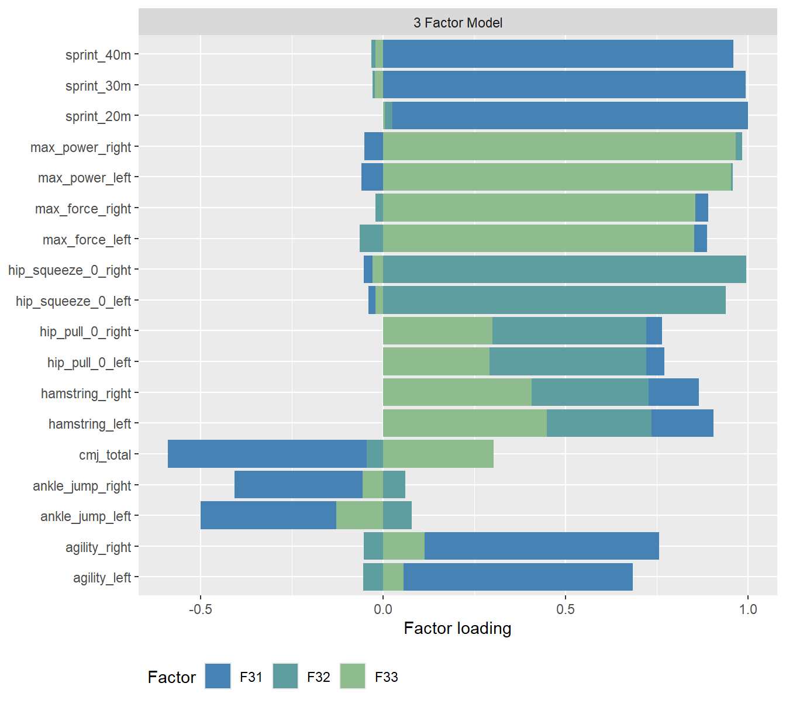
In the 3-factor model, we captured yet another domain of physical performance related to hip function. In this model, the first factor has high loadings on sprint and jump related variables, the second factor has high loadings on hip squeeze and pull related variables, which in the new dimension of physical performance related to hip function, and the third factor has high loadings on force and power related variables. This suggests that the first factor may represent a speed and power domain of physical performance, the second factor may represent a hip function domain, and the third factor may represent a strength and force domain.
When using 3-factor model, we can identify athletes who are good in hip function related tasks but not in sprint and jump related tasks or force and power related tasks which may be missed if we use scores from 1-factor model or 2-factor model.
| Factor loadings | |
|---|---|
| 1 Factor Model (Variance explained: 25%) | |
| F11: Physical Fitness | sprint_20m, sprint_30m, sprint_40m, agility_left, agility_right, cmj_total, ankle_jump_left, ankle_jump_right, max_power_left, max_power_right, max_force_left, max_force_right, hamstring_left, hamstring_right, hip_squeeze_0_left, hip_squeeze_0_right, hip_pull_0_left, and hip_pull_0_right |
| 2 Factor Model (Variance explained: 24.23% and 23.79%) | |
| F12: Speed and Jump | sprint_20m, sprint_30m, sprint_40m, agility_left, agility_right, cmj_total, ankle_jump_left, and ankle_jump_right |
| F22: Knee, Hamstring, and Hip | max_power_left, max_power_right, max_force_left, max_force_right, hamstring_left, hamstring_right, hip_squeeze_0_left, hip_squeeze_0_right, hip_pull_0_left, and hip_pull_0_right |
| 3 Factor Model (Variance explained: 23.8%, 22.5%, and 14.1%) | |
| F13: Speed and Jump | sprint_20m, sprint_30m, sprint_40m, agility_left, agility_right, cmj_total, ankle_jump_left, and ankle_jump_right |
| F23: Knee and Hamstring | max_power_left, max_power_right, max_force_left, max_force_right, hamstring_left, and hamstring_right |
| F33: Hip Strength | hip_squeeze_0_left, hip_squeeze_0_right, hip_pull_0_left, and hip_pull_0_right |
Factor, Scores, and Physical Fitness Test
When we suse 1, 2, or 3 factor model, we can calculate scores for each athlete based on the factor loadings and their test variable values. These scores represent the athlete’s performance in the underlying factor domain identified by the factor analysis. For example, in the 1-factor model, the score represents the athlete’s overall physical performance. In the 2-factor model, the first factor score represents the athlete’s performance in the speed and power domain, while the second factor score represents the athlete’s performance in the strength and force domain.
In the following plots, we can see how the scores from each factor model relate to the original test variables and the performance categories (high, medium, low) based on the scores. This helps us understand how well the factor scores capture the information from the original test variables and how they differentiate between athletes with different levels of performance.
Here, we can see high correlation between scores from 1-factor model and sprint and jump related variables which is expected as these variables had the highest loadings on the factor. But for varialbes like hip_squeeze_0_left and max_power_left, the correlation with scores from 1-factor model is weaker which is also expected as these variables had lower loadings on the factor.
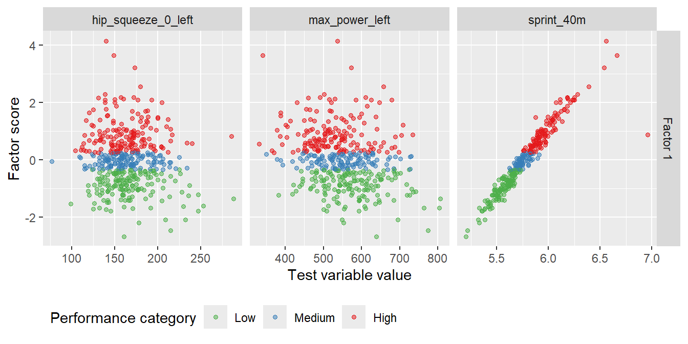
In this model, we have two factors scores, the first one has high correlation with sprint and jump related variables and the second one has high correlation with force and power related variables. This is expected as these variables had the highest loadings on their respective factors. For varialbes like hip_squeeze_0_left, the correlation with scores from both factors is weaker which is also expected as this variable had lower loadings on both factors. In this model, when we use the second score, we are representing the athlete’s performance in the strength and force domain which is not captured by the first score from 1-factor model. This allows us to identify athletes who are good in force and power related tasks but not in sprint and jump related tasks which may be missed if we use scores from 1-factor model.
This is important when we want to analyze injuries that is more related to force and power related tasks as we can identify athletes who are at risk of such injuries based on their scores from the second factor in the 2-factor model which may not be possible if we use scores from 1-factor model.
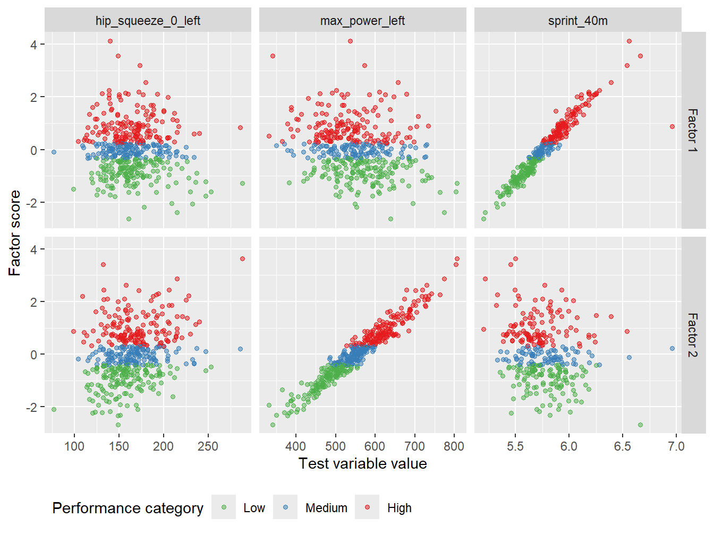
In the 3-factor model, there is additional dimension captured by the second factor which is related to hip function. In this model, the second factor has high correlation with hip squeeze and pull related variables. This is expected as these variables had the highest loadings on the second factor. When we use the second score from this model, we are representing the athlete’s performance in the hip function domain which is not captured by the any of the scores in 1-factor model or 2-factor model. This allows us to identify athletes who are good in hip function related tasks and is important when analyzing injuries that is more related to hip function as we can identify athletes who are at risk of such injuries.
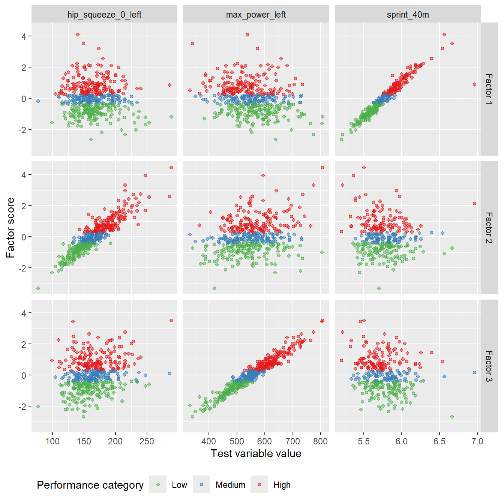
Factor analysis: 1-factor model (Physical Fitness Model)
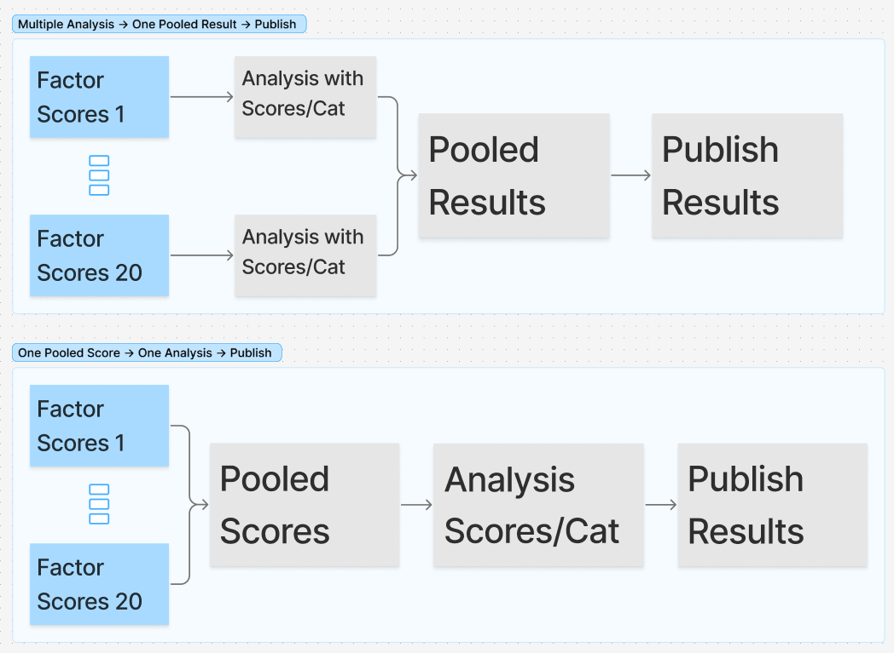
Incidence (overall and by injury type)
The following analysis is based on “one pooled score” approach illustrated in the figure above. Here, the scores from all 20 imputed datasets are pooled into one single score for each athlete and then categorized into three categories (high, medium, low) based on quantiles.
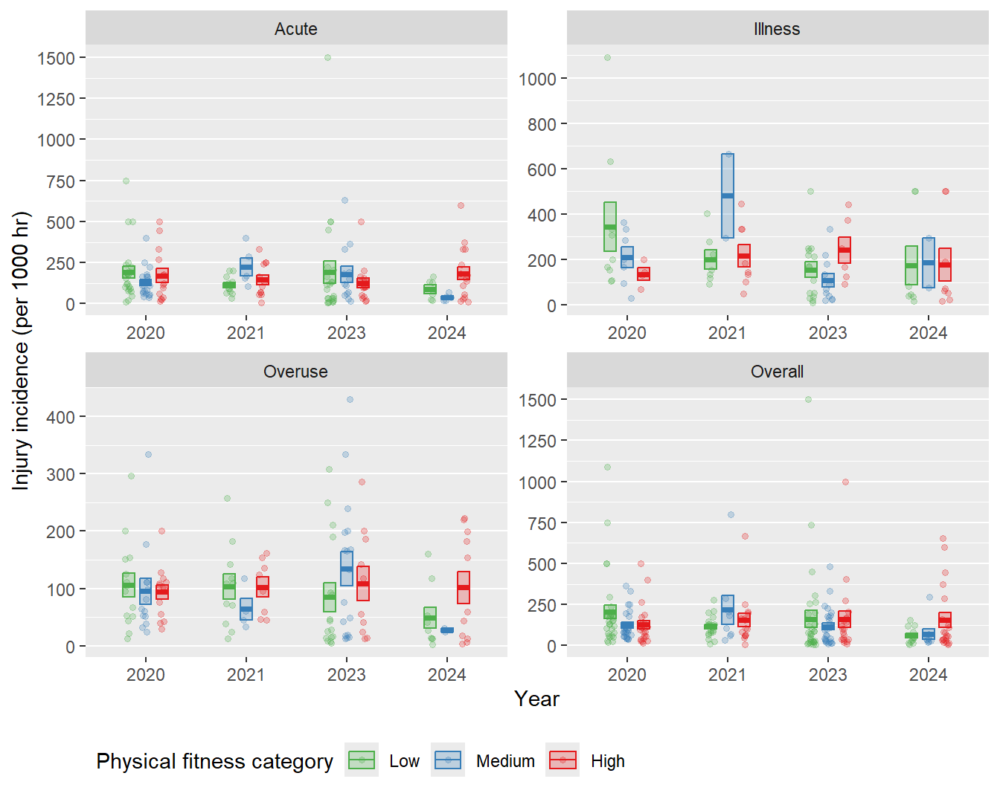
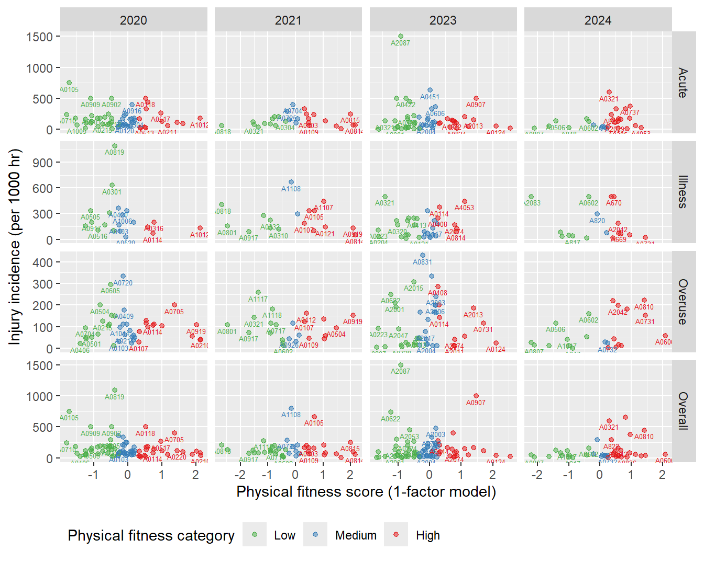
Modelling incidence using scores and fitness categories from 1-factor model
Modelling incidence vs scores from 1-factor model
Here, the continuous scores from 1-factor model are used as a predictor in the model to analyze the relationship between physical fitness and injury incidence. This allows us to see how changes in the physical fitness score are associated with changes in injury incidence, also accounting for other factors such as year and injury type.
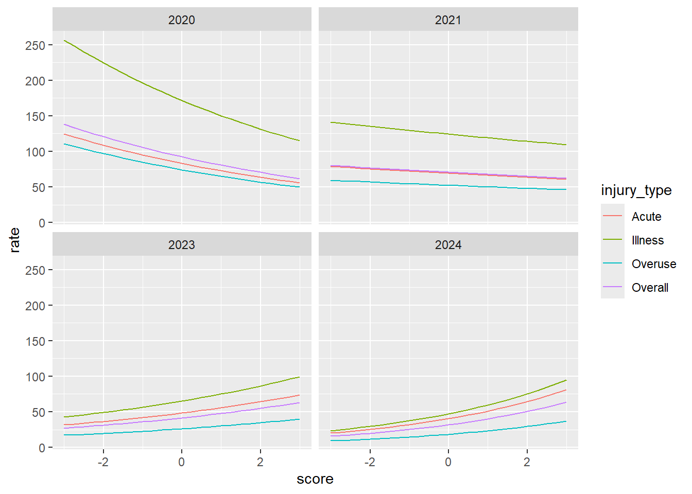
The results shows that the injury incidence tends to decrease with physical fitness (score from 1-factor model) for overall injuries and by injury type, however this is only for the year 2020 and 2021. For the year 2023 and 2024, we observed rather reversed relationship where the injury incidence tends to increase with physical fitness (score from 1-factor model) for overall injuries and by injury type.
This is a bit unexpected and may be due to several reasons. One possible reason is that the relationship between physical fitness and injury incidence may have changed over time due to changes in training practices, injury prevention strategies, or other factors that may have influenced the relationship between physical fitness and injury incidence in these years. Another possible reason is that there may be some confounding factors that are influencing the relationship between physical fitness and injury incidence in these years which are not captured by the model.
Maybe using multiple factor model and using scores from different factors may provide more insights into the relationship between physical fitness and injury incidence as it can capture different dimensions of physical fitness which may have different relationships with injury incidence.
Call:
glm(formula = total_injury ~ year + injury_type + score + year *
injury_type + year * score + offset(log(exposure)), family = poisson(link = "log"),
data = model_data_fa1)
Coefficients:
Estimate Std. Error z value Pr(>|z|)
(Intercept) 363.05977 80.23785 4.525 6.05e-06 ***
year -0.18096 0.03968 -4.560 5.11e-06 ***
injury_typeIllness 287.65328 143.30426 2.007 0.04472 *
injury_typeOveruse 337.31120 120.08333 2.809 0.00497 **
injury_typeOverall 174.94371 95.10854 1.839 0.06585 .
score -185.34867 43.01430 -4.309 1.64e-05 ***
year:injury_typeIllness -0.14204 0.07087 -2.004 0.04503 *
year:injury_typeOveruse -0.16704 0.05939 -2.813 0.00491 **
year:injury_typeOverall -0.08655 0.04704 -1.840 0.06575 .
year:score 0.09169 0.02127 4.310 1.63e-05 ***
---
Signif. codes: 0 '***' 0.001 '**' 0.01 '*' 0.05 '.' 0.1 ' ' 1
(Dispersion parameter for poisson family taken to be 1)
Null deviance: 1495.4 on 617 degrees of freedom
Residual deviance: 1174.3 on 608 degrees of freedom
AIC: 2712
Number of Fisher Scoring iterations: 6Modelling incidence vs fitness categories from 1-factor model
Here, the fitness categories (high, medium, low) based on scores from 1-factor model are used as a predictor in the model to analyze the relationship between physical fitness and injury incidence. This allows us to see how being in different fitness categories is associated with changes in injury incidence, also accounting for other factors such as year and injury type.
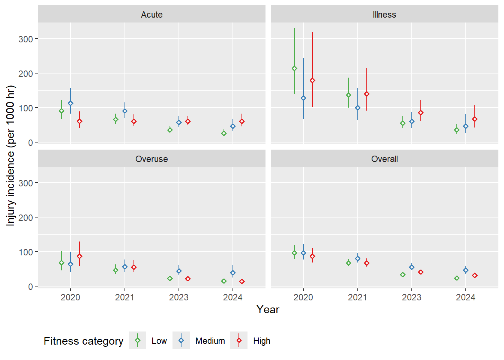
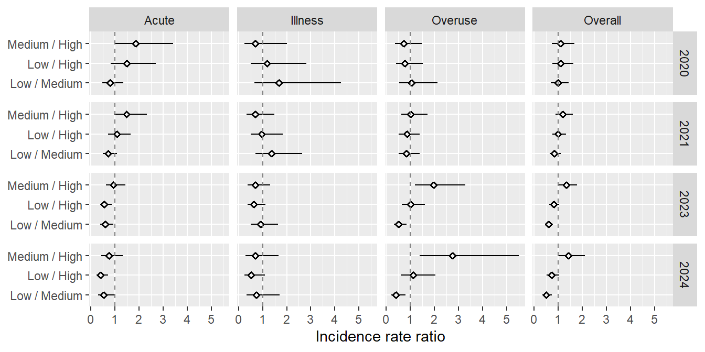
Call:
glm(formula = total_injury ~ year * injury_type * fitness_cat +
offset(log(exposure)), family = poisson(link = "log"), data = model_data_fa1)
Coefficients:
Estimate Std. Error z value
(Intercept) 639.64934 136.75802 4.677
year -0.31785 0.06764 -4.699
injury_typeIllness 270.63961 220.77683 1.226
injury_typeOveruse 95.00553 204.36102 0.465
injury_typeOverall 67.35512 160.98266 0.418
fitness_catMedium -187.58354 192.19617 -0.976
fitness_catHigh -646.34026 197.18942 -3.278
year:injury_typeIllness -0.13355 0.10919 -1.223
year:injury_typeOveruse -0.04717 0.10107 -0.467
year:injury_typeOverall -0.03331 0.07962 -0.418
year:fitness_catMedium 0.09297 0.09506 0.978
year:fitness_catHigh 0.31977 0.09752 3.279
injury_typeIllness:fitness_catMedium -215.51489 364.29682 -0.592
injury_typeOveruse:fitness_catMedium -299.55906 305.19935 -0.982
injury_typeOverall:fitness_catMedium -149.87831 231.40787 -0.648
injury_typeIllness:fitness_catHigh 232.55666 335.13629 0.694
injury_typeOveruse:fitness_catHigh 826.46108 289.47189 2.855
injury_typeOverall:fitness_catHigh 438.08154 231.95579 1.889
year:injury_typeIllness:fitness_catMedium 0.10632 0.18016 0.590
year:injury_typeOveruse:fitness_catMedium 0.14816 0.15094 0.982
year:injury_typeOverall:fitness_catMedium 0.07409 0.11445 0.647
year:injury_typeIllness:fitness_catHigh -0.11501 0.16573 -0.694
year:injury_typeOveruse:fitness_catHigh -0.40882 0.14315 -2.856
year:injury_typeOverall:fitness_catHigh -0.21672 0.11471 -1.889
Pr(>|z|)
(Intercept) 2.91e-06 ***
year 2.62e-06 ***
injury_typeIllness 0.22025
injury_typeOveruse 0.64201
injury_typeOverall 0.67565
fitness_catMedium 0.32906
fitness_catHigh 0.00105 **
year:injury_typeIllness 0.22127
year:injury_typeOveruse 0.64071
year:injury_typeOverall 0.67568
year:fitness_catMedium 0.32806
year:fitness_catHigh 0.00104 **
injury_typeIllness:fitness_catMedium 0.55412
injury_typeOveruse:fitness_catMedium 0.32634
injury_typeOverall:fitness_catMedium 0.51719
injury_typeIllness:fitness_catHigh 0.48773
injury_typeOveruse:fitness_catHigh 0.00430 **
injury_typeOverall:fitness_catHigh 0.05894 .
year:injury_typeIllness:fitness_catMedium 0.55508
year:injury_typeOveruse:fitness_catMedium 0.32633
year:injury_typeOverall:fitness_catMedium 0.51741
year:injury_typeIllness:fitness_catHigh 0.48769
year:injury_typeOveruse:fitness_catHigh 0.00429 **
year:injury_typeOverall:fitness_catHigh 0.05885 .
---
Signif. codes: 0 '***' 0.001 '**' 0.01 '*' 0.05 '.' 0.1 ' ' 1
(Dispersion parameter for poisson family taken to be 1)
Null deviance: 1495.4 on 617 degrees of freedom
Residual deviance: 1141.2 on 594 degrees of freedom
AIC: 2707
Number of Fisher Scoring iterations: 6